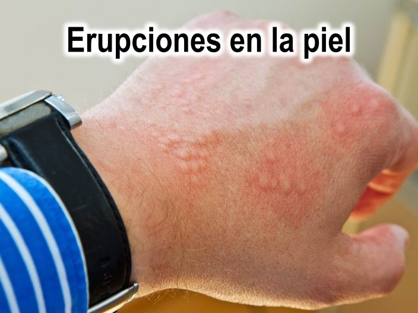
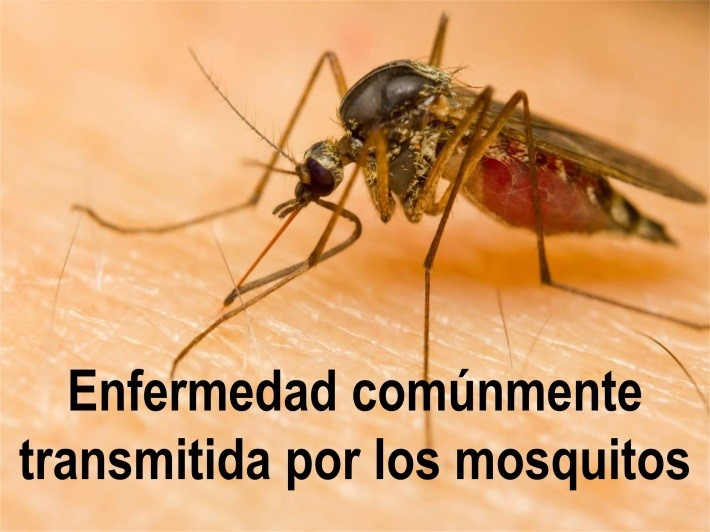
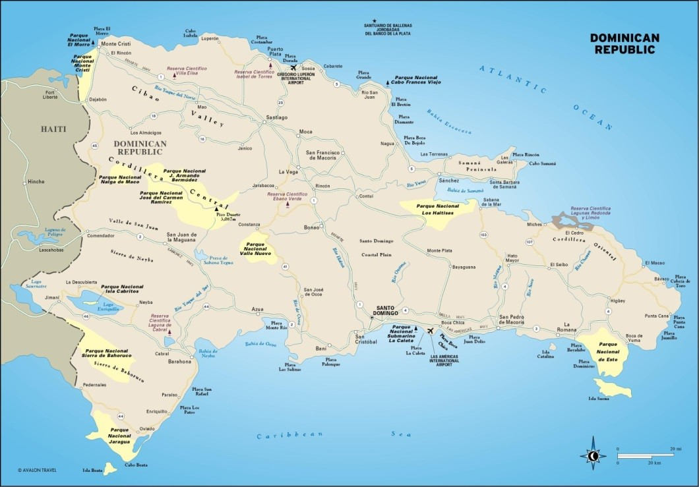
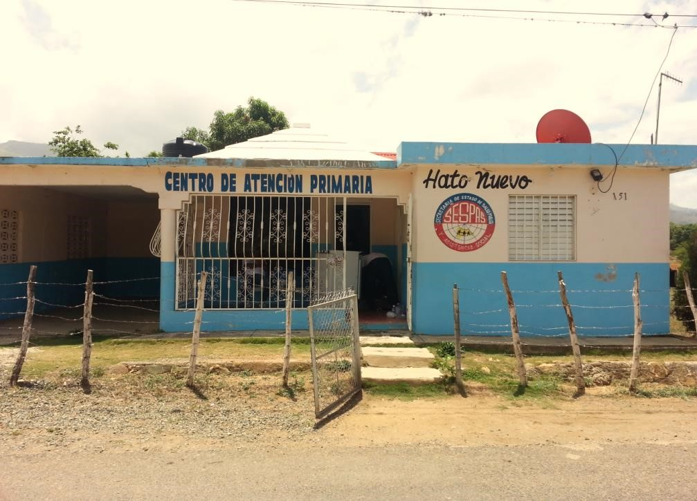
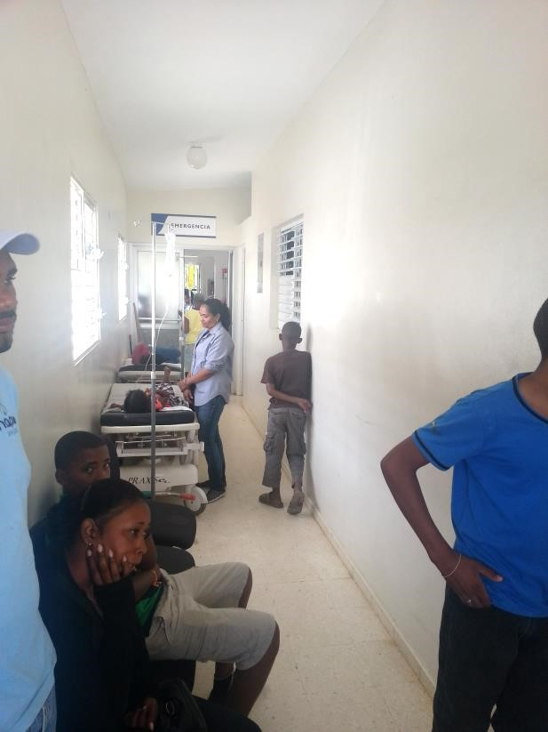
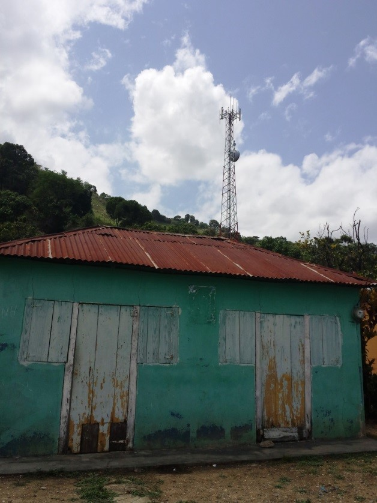
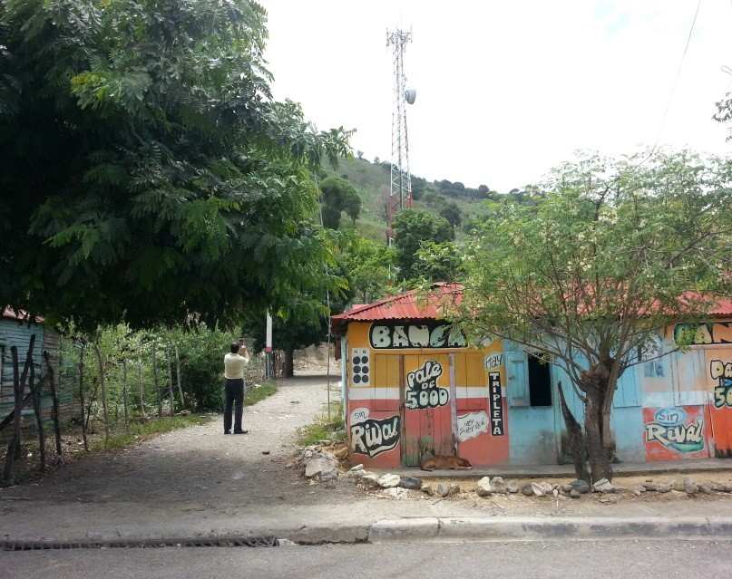

Back to all projects
Back to all projects
Public Health Broadcasts in the Dominican Republic
Public Health Broadcasts in the Dominican RepublicThe Dominican Republic (DR) M-health campaign is an initiative launched in 2014 at the New Jersey Institute of Technology to educate underserved populations in DR about relevant health topics with the intention of improving their quality of life. Seven New Jersey Institute of Technology (NJIT) students participated in this project using Cell Podium technology developed for CDC, including the CMS and the Automatic Media Converter (AMC).
The students received the training provided to CDC in February 2014, and created culturally-appropriate storyboards on a public health concerns deemed relevant in DR by CDC. Students selected Typhoid, Hepatitis A, Dengue Fever, Malaria, and Tuberculosis, and then vetted their storyboards with subject matter experts in DR prior to converting them into videos for broadcast to cell phones (Figure 1).
|  | |
|  |
Figure 1 Screen shots of Dominican storyboards.


Figure 2 Regions of the Ministry of Health in the Dominican Republic.
With funding from the International Foundation, two one-week trips were made to the DR: one for requirements assessment in July and one for quality assurance in August. Each trip consisted of three students and one faculty member. Jose Abreu, founder of the Dominican house-building non-profit Cambiando Vidas (a regional analog to Habitat for Humanity), facilitated both trips.
Members of the first trip met Dr. Hector Guerrero, Director of the Ministry of Public Health, Province VI, and Dr. Angel Mateo, Director of the San Juan Municipal Clinic, who explained their health outreach priorities, reviewed the storyboards, and provided full access to the medical records of the clinics in DR Province VI, which includes the Cordillera Central mountains and is the most impoverished (Figure 2). These meetings expanded the target audience of the project from 25 families in the rural region outside San Juan as initially proposed to the International Foundation to 500,000 rural inhabitants. Members of the first trip spent the next three days visiting the rural areas and clinics (Figure 3), learned firsthand about the major health issues to be addressed, and verified cell phone signal strength (Figure 4).
Members of the second trip configured a cell phone to serve as a video transmitter in the DR, and reviewed the students’ health outreach videos with Dr. Guerrero to verify their medical and cultural relevance. This trip concluded with a test broadcast of one video to the cell phones of Dr. Guerrero, Dr. Mateo, and Jose Abreu. While the test was successful, we discovered that not all wireless service providers in the Dominican Republic support picture messaging.
Future efforts will focus on integrating this M-health initiative with ongoing Dominican public health programs. Even though DR is suffering from an epidemic of the rare Chikungunya fever, its main public health concerns are more endemic to evolved economies, in particular obesity and high blood pressure. The Ministry of Public Health seeks outreach campaign to encourage Dominicans to visit their rural clinics regularly and monitor their blood pressure and cholesterol.
|  |  |
Figure 3 Rural clinic, and patients suffering from the Chikungunya epidemic
|  |  |
Figure 4 Cell phone towers in rural Dominican Republic.